Studying visual attention beyond the lab: Lessons from applied eye-tracking
Shreshth Saxena (saxens17@mcmaster.ca) & Dr. Lauren Fink
Tracking attention beyond the lab with eye movements


Tracking attention beyond the lab with eye movements


Why take eye tracking beyond the lab?
- Study social attention in context
- Study cross-modal dynamics with complex, ecological stimuli
- Reach global and underrepresented populations
- Bridge research and deployment–align methods with real-world systems and industry use cases
- Findings from lab based studies often do not replicate in naturalistic/real-world experimentation
- Foulsham et al. (2011). The where, what and when of gaze allocation in the lab and the natural environment. Vision Research, doi: 10.1016/j.visres.2011.07.002.
- Wohltjen & Wheatley (2024) Interpersonal eye-tracking reveals the dynamics of interacting minds. Front. Hum. Neurosci. doi: 10.3389/fnhum.2024.1356680
- Laborde et al. (2025) Vision toolkit part 1. Neurophysiological foundations and experimental paradigms in eye-tracking research: a review. Front Physiol. doi: 10.3389/fphys.2025.1571534.
- Hoppe et al. (2018) Eye Movements During Everyday Behavior Predict Personality Traits. Front. Hum. Neurosci. doi: 10.3389/fnhum.2018.00105
How do we run eye-tracking studies outside the lab?
How do we run eye-tracking studies outside the lab?


Remote settings
Relying on state-of-the-art hardwaresoftware


- Study 1: Reliably calibrating screen-camera setups
- Study 2: Characterising the accuracy of webcam eye-tracking
- Study 3: Optimising the speed-accuracy trade-off
Study 1: Reliably calibrating screen-camera setups
Study 1: Reliably calibrating screen-camera setups


Shreshth Saxena, Elke Lange, and Lauren Fink. 2022. Towards efficient calibration for webcam eye-tracking in online experiments. In 2022 Symposium on Eye Tracking Research and Applications (ETRA '22). Association for Computing Machinery, New York, NY, USA, Article 27, 1–7. https://doi.org/10.1145/3517031.3529645
Study 2: Characterising the accuracy of webcam eye-tracking
Study 2: Characterising the accuracy of webcam eye-tracking

Shreshth Saxena, Lauren Fink, and Elke Lange. 2023. Deep learning models for webcam eye tracking in online experiments. Behaviour Research 56, 3487–3503. https://doi.org/10.3758/s13428-023-02190-6
Study 2: Characterising the accuracy of webcam eye-tracking
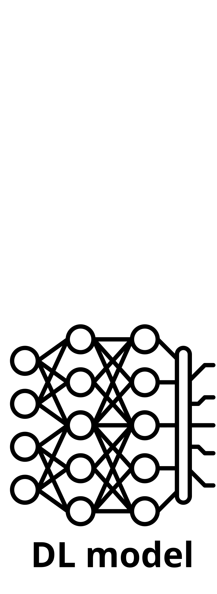
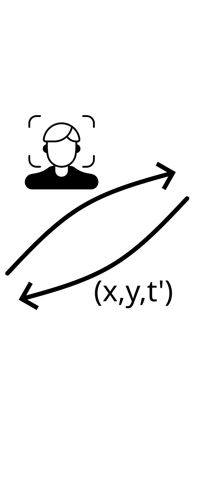


Lesson 1: Deep learning outperform present SOTA, but offline inference limits real-time use and privacy.
Study 3: Optimising the speed-accuracy trade-off

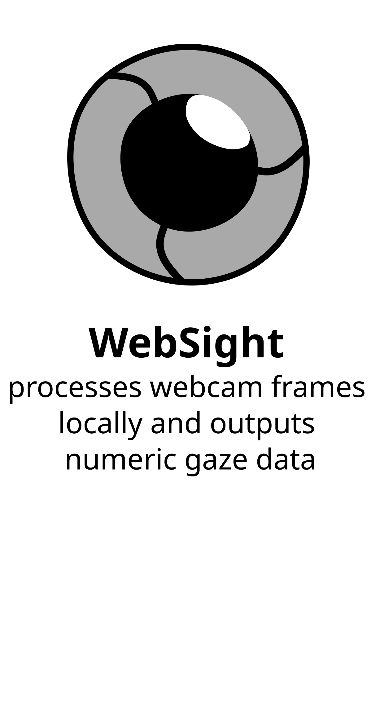
Shreshth Saxena, and Lauren Fink. 2026. WebSight: Accessible and privacy-aware webcam eye tracking using real-time deep learning in the browser. Manuscript in Preparation
Summary of results
|
 |
Lessons from eye-tracking in remote settings
Lessons from eye-tracking in remote settings
- Calibration sequence (tasks and placement) strongly affects final prediction accuracy
- Results can inform experiment design choices such as stimuli size and placement
- Traditional event-detection and analysis pipelines do not work for 30Hz eye-tracking data
- Proprietary, GUI-based experiment builders don’t scale
- Problem no. 1: Openwashing (https://en.wikipedia.org/wiki/Openwashing)
- Problem no. 2: Working with a limited toolset and inconsistent terminologies
- Saxena S, Shi J, Fink L. 2026. AVOKE: an open-source toolbox for audiovisual web experiments in jsPsych. PeerJ
- Live Demo: https://beatlab-mcmaster.github.io/AVOKE/
- Real-time deep learning inference in the web-browser is still in beta
- Industry focus got shifted back to server-compute with the rise of LLMs
- WebGPU and webONNX suffer from abondoned research/development
- WebSight works around it using classic web workers and webGL!
Validating deep learning models
Validating deep learning models
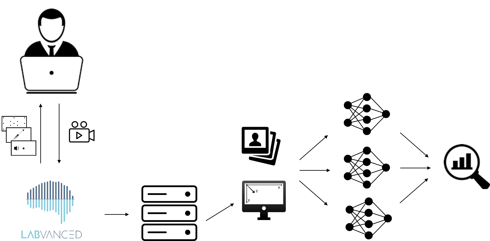
Validating deep learning models
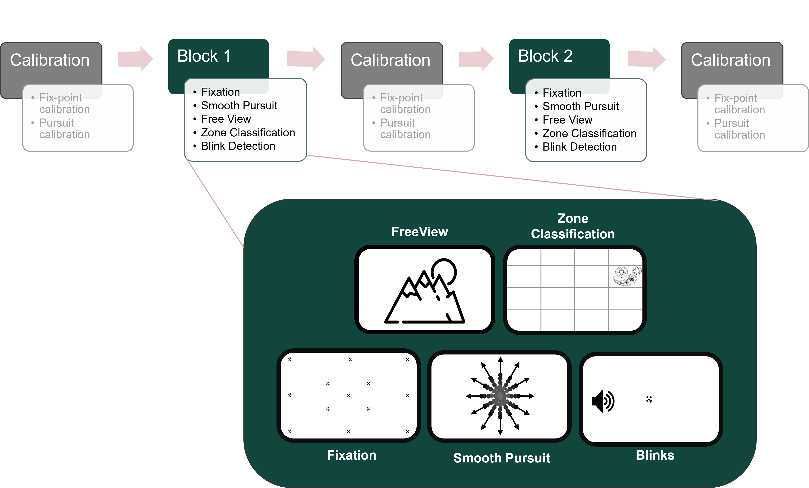
Fixation
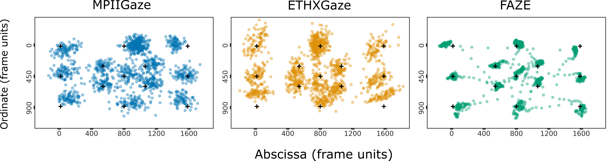
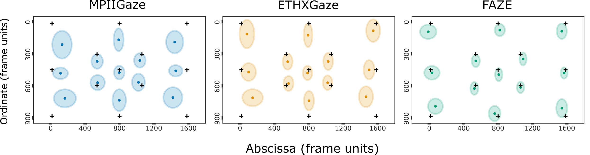
| MPIIGaze | ETHXGaze | FAZE | |
|---|---|---|---|
| Accuracy | 3.70° (IQR: 2.74°-4.59°) | 3.40° (IQR: 2.67°-4.13°) | 2.44° (IQR: 1.86°-2.90°) |
| Root Mean Squared (Precision) | 2.33° (IQR: 1.88-2.75) | 1.80° (IQR: 1.28°-2.29°) | 0.47° (IQR: 0.29-0.64) |
| Standard Deviation (Precision) | 2.96° (IQR: 2.32°-3.57°) | 2.39° (IQR: 1.70-2.98) | 1.63° (IQR: 1.06° 2.07°) |
Zone classification
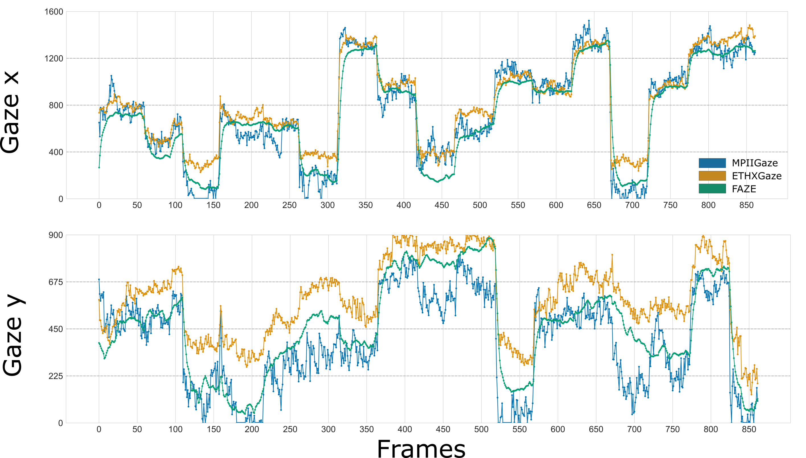
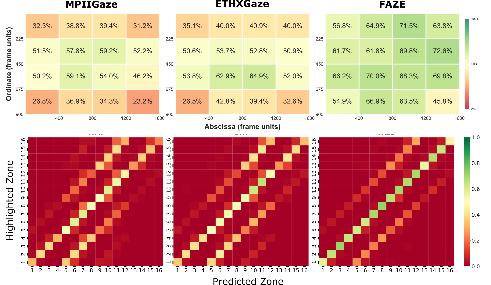
Zone classification
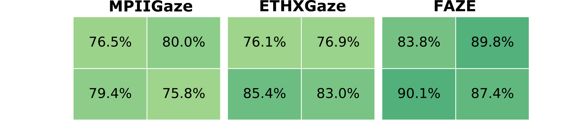
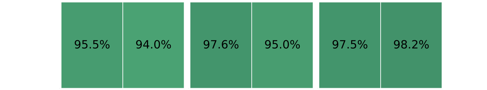
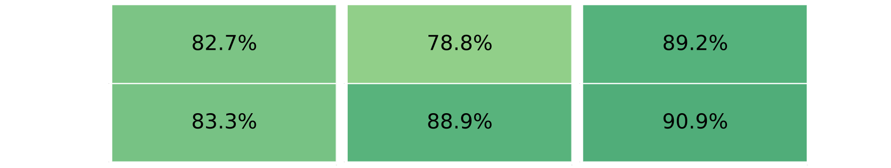
Free viewing
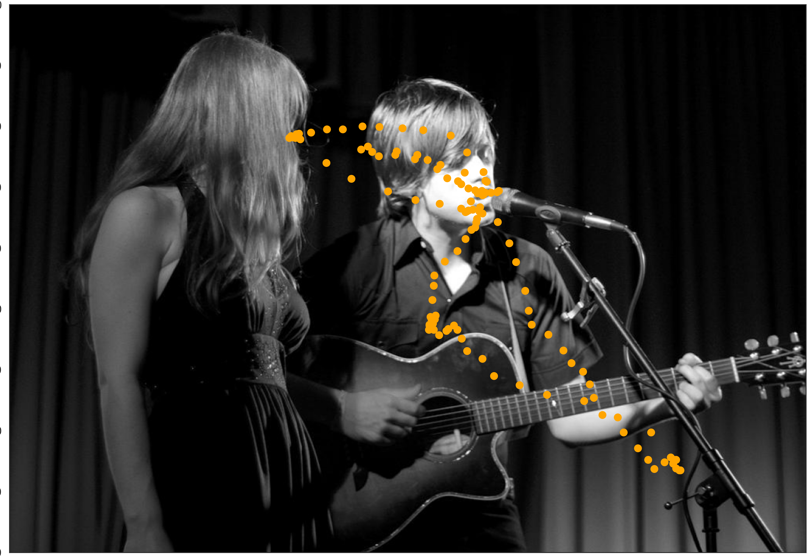
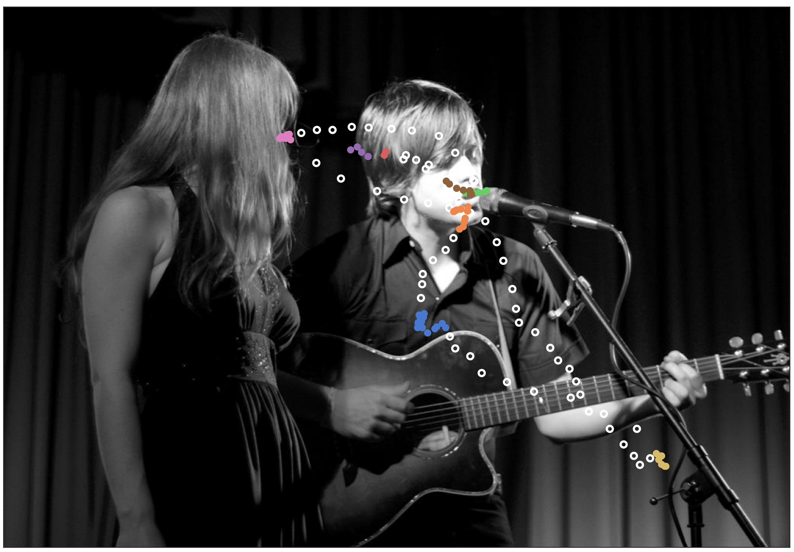
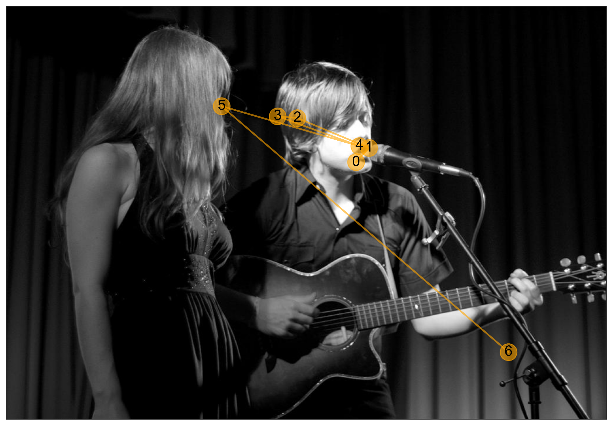
Free viewing


| MPIIGaze | ETHXGaze | FAZE | |
|---|---|---|---|
| Fixation count | 14 IQR: 12-18 | 13 IQR: 10-15 | 12 IQR: 11-13 |
| Gaze entropy | 0.40 IQR:0.38-0.44 | 0.38 IQR: 0.35-0.41 | 0.35 IQR: 0.33-0.37 |

Smooth pursuit
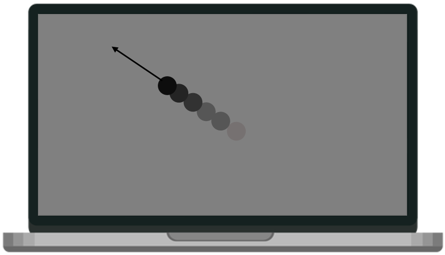
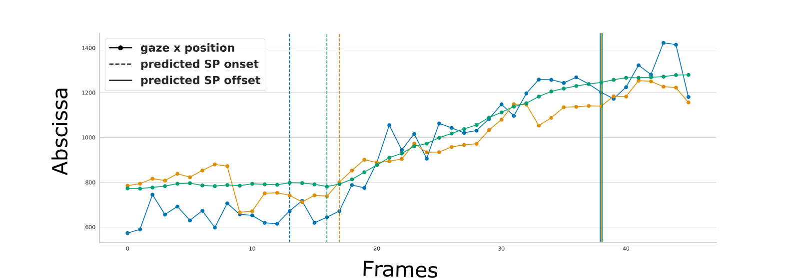
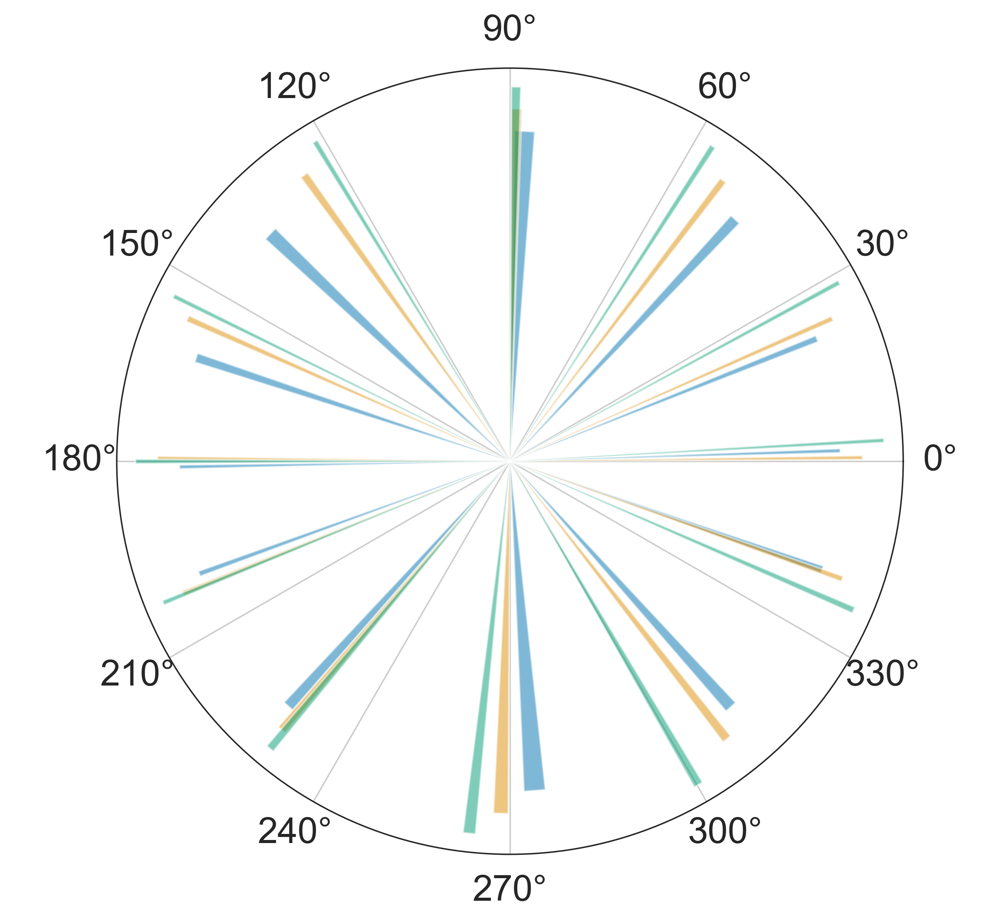
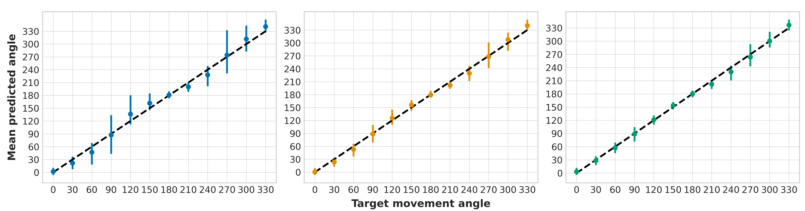
Blink detection
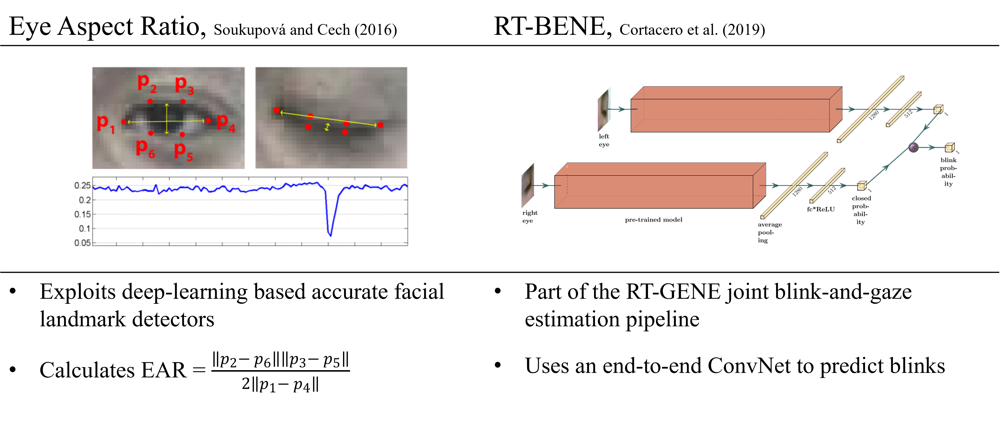
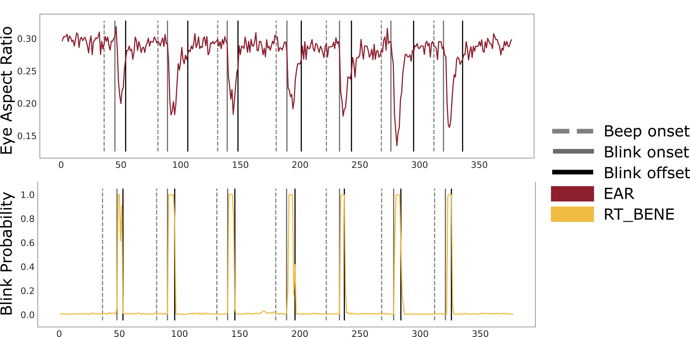
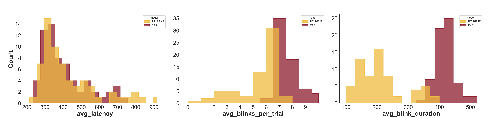
| EAR | RT_BENE | |
|---|---|---|
| blinks/trial | 6.9 (IQR: 6.3-7.2) | 5.3 (IQR: 4.9-6) |
| blink latency | 381 ms(IQR: 293-427 ms) | 419 ms(IQR: 318-502 ms) |
| blink duration | 403 ms(IQR: 383-424 ms) | 212 ms(IQR : 157-243 ms) |
Summary
|
|
How do we take eye tracking outside the lab?
In-person settings
Relying on hardware and software
 x N
x N
Relying on hardware and software
Relying on hardware and software
- Properitary firmware/software
- Logistical challenges when managing a fleet
- Synchronising data from multiple sensors and clocks
- Synchronising data from multiple egocentric perspectives
- Joint attention visualisation and analysis
Study 4: Scaling Mobile Eye-tracking
- Properitary firmware/software
- Logistical challenges when managing a fleet
- Synchronising data from multiple sensors and clocks
- Synchronising data from multiple egocentric perspectives
- Joint attention visualisation and analysis

Saxena et al. 2025. SocialEyes: Scaling Mobile Eye-tracking to Multi-person Social Settings. In Proceedings of the 2025 CHI Conference on Human Factors in Computing Systems (CHI '25). Association for Computing Machinery, New York, NY, USA, Article 751, 1–19. https://doi.org/10.1145/3706598.3713910
Study 4: Scaling Mobile Eye-tracking
- Properitary firmware/software
- Logistical challenges when managing a fleet
- Synchronising data from multiple sensors and clocks
- Synchronising data from multiple egocentric perspectives
- Joint attention visualisation and analysis

Saxena et al. 2025. SocialEyes: Scaling Mobile Eye-tracking to Multi-person Social Settings. In Proceedings of the 2025 CHI Conference on Human Factors in Computing Systems (CHI '25). Association for Computing Machinery, New York, NY, USA, Article 751, 1–19. https://doi.org/10.1145/3706598.3713910
Study 4: Scaling Mobile Eye-tracking
- Properitary firmware/software
- Logistical challenges when managing a fleet
- Synchronising data from multiple sensors and clocks
- Synchronising data from multiple egocentric perspectives
- Joint attention visualisation and analysis

Saxena et al. 2025. SocialEyes: Scaling Mobile Eye-tracking to Multi-person Social Settings. In Proceedings of the 2025 CHI Conference on Human Factors in Computing Systems (CHI '25). Association for Computing Machinery, New York, NY, USA, Article 751, 1–19. https://doi.org/10.1145/3706598.3713910
Study 4: Scaling Mobile Eye-tracking
- Properitary firmware/software
- Logistical challenges when managing a fleet
- Synchronising data from multiple sensors and clocks
- Synchronising data from multiple egocentric perspectives
- Joint attention visualisation and analysis

Saxena et al. 2025. SocialEyes: Scaling Mobile Eye-tracking to Multi-person Social Settings. In Proceedings of the 2025 CHI Conference on Human Factors in Computing Systems (CHI '25). Association for Computing Machinery, New York, NY, USA, Article 751, 1–19. https://doi.org/10.1145/3706598.3713910
Study 4: Scaling Mobile Eye-tracking
- Properitary firmware/software
- Logistical challenges when managing a fleet
- Synchronising data from multiple sensors and clocks
- Synchronising data from multiple egocentric perspectives
- Joint attention visualisation and analysis
Saxena et al. 2025. SocialEyes: Scaling Mobile Eye-tracking to Multi-person Social Settings. In Proceedings of the 2025 CHI Conference on Human Factors in Computing Systems (CHI '25). Association for Computing Machinery, New York, NY, USA, Article 751, 1–19. https://doi.org/10.1145/3706598.3713910
Study 4: Scaling Mobile Eye-tracking
- Properitary firmware/software
- Logistical challenges when managing a fleet
- Synchronising data from multiple sensors and clocks
- Synchronising data from multiple egocentric perspectives
- Joint attention visualisation and analysis
Saxena et al. 2025. SocialEyes: Scaling Mobile Eye-tracking to Multi-person Social Settings. In Proceedings of the 2025 CHI Conference on Human Factors in Computing Systems (CHI '25). Association for Computing Machinery, New York, NY, USA, Article 751, 1–19. https://doi.org/10.1145/3706598.3713910
Study 4: Scaling Mobile Eye-tracking
- Properitary firmware/software
- Logistical challenges when managing a fleet
- Synchronising data from multiple sensors and clocks
- Synchronising data from multiple egocentric perspectives
- Joint attention visualisation and analysis
Saxena et al. 2025. SocialEyes: Scaling Mobile Eye-tracking to Multi-person Social Settings. In Proceedings of the 2025 CHI Conference on Human Factors in Computing Systems (CHI '25). Association for Computing Machinery, New York, NY, USA, Article 751, 1–19. https://doi.org/10.1145/3706598.3713910
Study 4: Scaling Mobile Eye-tracking
Saxena et al. 2025. SocialEyes: Scaling Mobile Eye-tracking to Multi-person Social Settings. In Proceedings of the 2025 CHI Conference on Human Factors in Computing Systems (CHI '25). Association for Computing Machinery, New York, NY, USA, Article 751, 1–19. https://doi.org/10.1145/3706598.3713910
Lessons from eye-tracking in co-located, social settings
Lessons from eye-tracking in co-located, social settings
- The Goldilocks trade-off: non-invasive design vs. experimental control
- Manual annotations and synchronisation doesn't scale
- Mobile eye-trackers are mostly built/tested for single-user, self-operation
- The cost of maintaining a fleet of eye-tracking hardware quickly adds up
- Properitary softwares and subscriptions make it much worse
- Call to manufacturers, researchers, and developers:
- OpenET: Converging on open standards for hardware-interfacing and data-sharing in eye-tracking
- https://openet-initiative.github.io/

Lessons from conducting eye-tracking beyond the lab
Lessons from conducting eye-tracking beyond the lab
- Standardization and open-source development is the key
- community-collaboration has solved similar challenges in other spaces
- Wide range of applications: cognitive neuroscience, healthcare, sports, broadcasting, events ...
- I wouldn't have survived without interdisciplinary contributions
- Science advances through both better questions and better methods
- Improving methods could take a full PhD and more
Thank you for your attention


Acknowledgements to all contributors, collaborators, and volunteers.